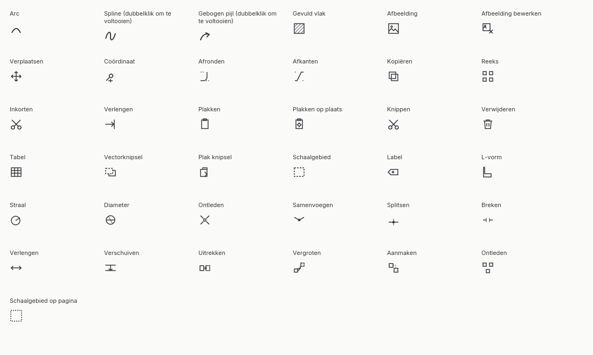
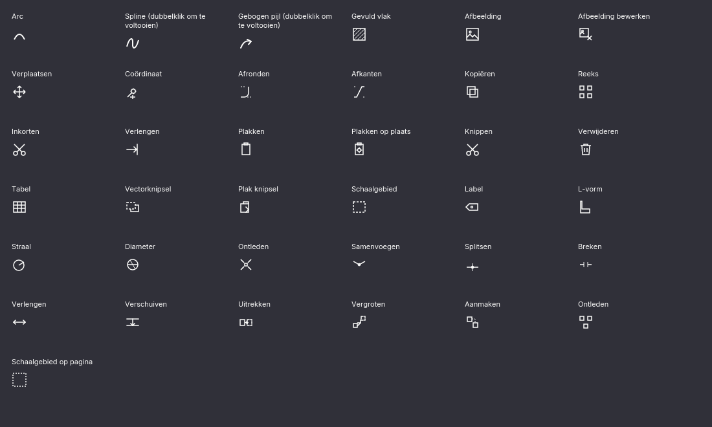
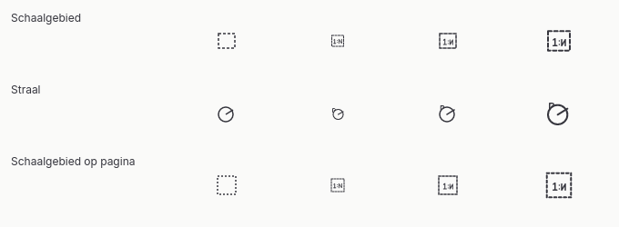
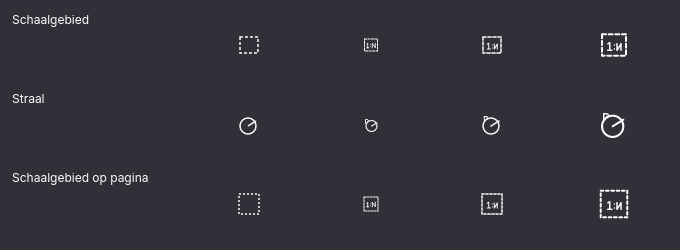

Ongebruikte placeholder
placeholderIcon · not-rendered · L44Geen UI-aanroep gevonden. Deze placeholder is geen geteld UI-icoon.
Definitie ↗38 letterlijke SVG-plaatsen uit de actuele Solid-bron op commit f754cb7; 37 staan op echte knoppen. Geïmporteerde vectoren uit ribbonIcons.js zijn een aparte broncategorie.
Geen UI-aanroep gevonden. Deze placeholder is geen geteld UI-icoon.
Definitie ↗design-PDF-drawing-command
Definitie ↗ dr-arc ↗design-PDF-drawing-command
Definitie ↗ dr-spline ↗design-PDF-drawing-command
Definitie ↗ dr-spline-arrow ↗design-PDF-drawing-command
Definitie ↗ dr-hatch ↗design-PDF-drawing-command
Definitie ↗ dr-image ↗design-PDF-drawing-command
Definitie ↗ dr-remove-image ↗compare-with-DomainIcon::TransformMove
Definitie ↗ dr-move ↗design-PDF-drawing-command
Definitie ↗ dr-spot-coord ↗design-PDF-drawing-command
Definitie ↗ dr-fillet ↗design-PDF-drawing-command
Definitie ↗ dr-chamfer ↗split-duplicate-and-clipboard-copy
Definitie ↗ dr-copy ↗ · dr-clip-copy ↗design-PDF-drawing-command
Definitie ↗ dr-array ↗compare-with-DomainIcon::DrawingTrim
Definitie ↗ dr-trim ↗compare-with-DomainIcon::DrawingExtend
Definitie ↗ dr-extend ↗design-PDF-drawing-command
Definitie ↗ dr-paste ↗design-PDF-drawing-command
Definitie ↗ dr-paste-in-place ↗compare-with-DomainIcon::DrawingTrim
Definitie ↗ dr-cut ↗design-PDF-drawing-command
Definitie ↗ dr-delete ↗keep-disabled-until-command-exists
Definitie ↗ dr-table ↗design-PDF-drawing-command
Definitie ↗ btn-vector-snippet ↗design-PDF-drawing-command
Definitie ↗ btn-vector-snippet-paste ↗design-PDF-drawing-command
Native aandachtspunt: Iced software SVG render omits source <text> glyph. Path-gebaseerde ontwerpvariant:
design-PDF-drawing-command
Definitie ↗ dr-label ↗design-PDF-drawing-command
Definitie ↗ dr-l-shape ↗design-PDF-drawing-command
Native aandachtspunt: Iced software SVG render omits source <text> glyph. Path-gebaseerde ontwerpvariant:
design-PDF-drawing-command
Definitie ↗ dr-diameter ↗design-PDF-drawing-command
Definitie ↗ dr-explode ↗design-PDF-drawing-command
Definitie ↗ dr-join ↗design-PDF-drawing-command
Definitie ↗ dr-split ↗design-PDF-drawing-command
Definitie ↗ dr-break ↗design-PDF-drawing-command
Definitie ↗ dr-lengthen ↗compare-with-DomainIcon::DrawingOffset
Definitie ↗ dr-offset ↗design-PDF-drawing-command
Definitie ↗ dr-stretch ↗design-PDF-drawing-command
Definitie ↗ dr-enlarge ↗design-PDF-drawing-command
Definitie ↗ dr-coll-create ↗design-PDF-drawing-command
Definitie ↗ dr-coll-explode ↗design-PDF-drawing-command
Native aandachtspunt: Iced software SVG render omits source <text> glyph. Path-gebaseerde ontwerpvariant:
Deze contactbladen tonen alle 37 gebruikte bron-SVG’s op 24 px. Bij Straal en beide Schaalgebied-knoppen ontbreekt de SVG-tekst in deze renderer; de path-gebaseerde varianten boven zijn een voorstel, geen bronkopie.


Per rij: oorspronkelijke 24px-bronrender, ontwerpvariant op 16, 24 en 32 px. De 16px-versie heeft een eigen vereenvoudigde geometrie.

